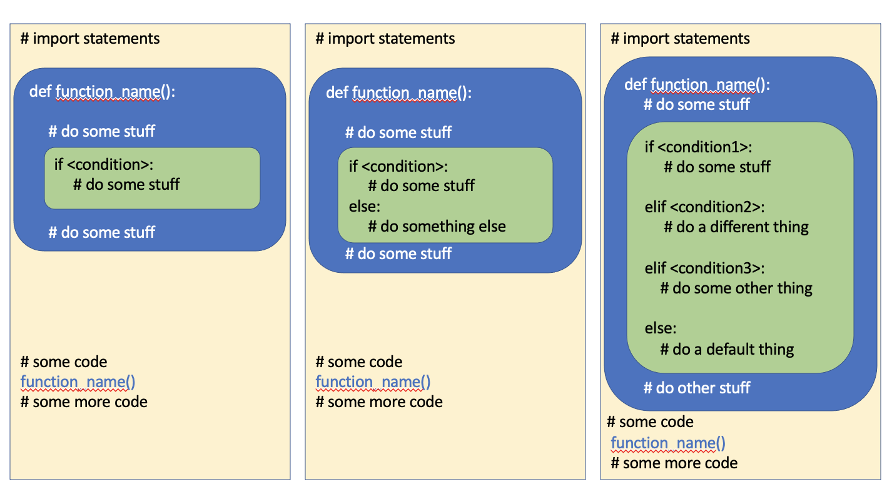
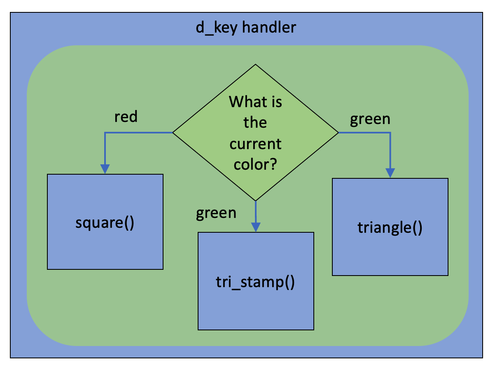
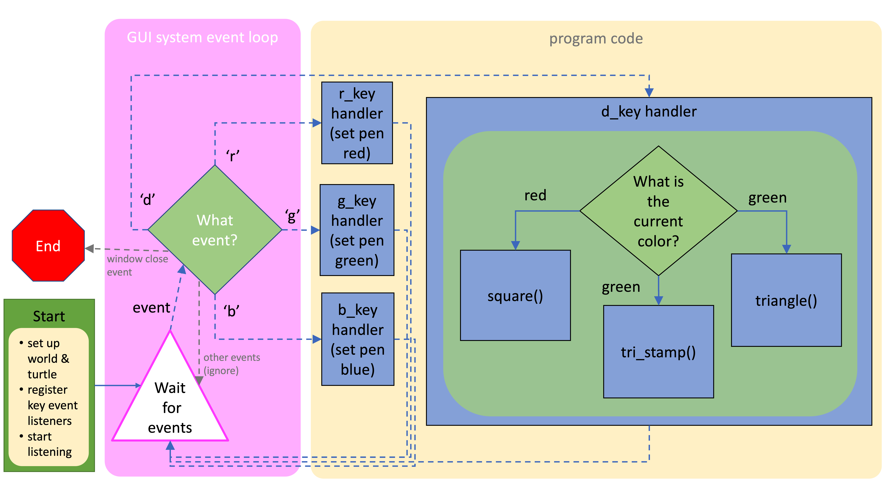

7.4. Combining Conditionals and Functions¶
In this section, we will look at examples where:
We use conditional branching inside of a function
We call functions from inside a conditional branch
Remember that we use functions to help break our code up into smaller, meaningful sub-tasks, and to enable easy code re-use. We use conditionals when we need to decide what code to execute based on some information (such as the state of certain variables, the contents in a list, or input we get from a user). So we will often make a decision and than call a function to perform different tasks depending on the decision outcome (calling functions from within conditional branches). It also makes sense that quite often within a function that performs a task, we need to make decisions as part of that task (having donditional statements inside of functions). And sometimes, we want to do both of those things.
7.4.1. Conditional Branching inside Functions¶
We use conditional branches inside functions when the function task involves making decisions about things. That could look like any of these:
{kind=link}
A toggle function is a really good example of a function with a conditional inside of it. Let’s imagine that we want a turtle to switch between drawing in red and black whenever the user presses the ‘t’ key on the keyboard. The following code accomplishes this through the toggle_color() function, which contains an if-else conditional statement.
A few things to note about this example:
The turtle moves to a random location whenever the user presses the ‘m’ key
We haven’t used an elif condition to check if the pencolor is black before switching it to red, but that would be a good idea if we thought the pen color could be set to something else somewhere else in the code.
You may be wondering why we don’t just put the if-else inside the key_t() listener function. But notice that we have actually allowed the user to press either the t key (for “Toggle”) or the c key (for “Color”) to toggle the color. If we put the if-else in the key_t() function, we’d then have to repeat it in the key_c() function. Remember that we want to avoid repeating code. We might also later want to toggle the pen color in response to some other thing happening (such as the turtle hitting the edge of the canvas). The toggle_color() function can be called from any part of the code, and then it makes a decision, based on the current state of the turtle, to update the turtle to a different color.
The tami.home() command is necessary in the Runestone textbook version of this code. If we don’t have a turtle movement command of some sort, Runestone won’t show the canvas, and until the canvas is shown, there is nothing to listen for. You wouldn’t need that command if you were running this code in a desktop Python environment.
7.4.2. Calling Functions from Conditional Blocks¶
It’s quite typical to have different functions for different tasks and then to call those functions depending on what happens at runtime. This is particularly true in event-based programming. The example above has the turtle moving and changing color in response to key presses. We can also imagine a program in which different things happen depending on the value of some variable, so we use a conditional to test that value, and then call various functions in response. In the turtle example below, everything happens in response to key presses. Some key presses change the current drawing color. Pressing the ‘d’ key causes shapes to be drawn, but the shape is dependent on the pen color. So a conditional tests the pen color, and then calls different shape drawing functions.
Things to note about this example:
The code inside the three drawing functions is repetitive. All of these functions could be improved with for loops, but we wanted this example to only have functions and conditionals.
This example uses function composition. The three drawing functions (square(), triangle() and tri_stamp() all call the random_move() function to get the turtle to a random position on campus first)
And this is an image that shows the functions being called within the d key handler, which is itself a function, called by the system when the end user presses the d key.
{kind=link}
While the image above depicts what is happening in the d-key handler, it doesn’t fully explain the path of execution for this interactive program. Let’s look at a bigger diagram that gives a more complete picture of what is happening:
{kind=link}
In this diagram, we show that when we create a turtle program that includes event listeners, the turtle module in Python works with the operating system to create what we call a GUI system event loop. That’s the big pink rectangle at the left and we don’t have to write the code for the event loop - it’s handled for us by Python and the turtle module. We have to write some starting code to trigger that: we set up the world and turtle and register the functions that will respond to events we want to listen for, and then we tell Python to start listening. That is what starts the GUI event loop. Python and the turtle module then sit in a loop waiting for user interface events, such as key presses and mouse clicks. When an event occurs, if it is an event we registered a handler for, that handler function is called. Once we have handled the event, you can think of the flow of execution going back to the pink loop, to wait for another event to handle. Note all of the dashed lines indicate function calls that we don’t make in our code. We don’t ever call r_key or g_key, etc. They are only called by the system in response to user events. However, we do explicitly call square(), tri_stamp() and triangle() and those functions all call random_move() (which we didn’t show in this diagram).
A few other things you might note here: if an event occurs that we haven’t registered a handler function for (such as someone dragging the mouse, or pressing the ‘m’ key), those events will be ignored and the system will just keep waiting for more events. Also, if the user closes the window (the browser tab in Runestone or the turtle canvas window if you run this program on your computer), that will cause the GUI event loop to close, because the events are linked to the turtle canvas/window.
You’ll see more detailed examples of GUI system event loops in a later chapter where we explore event-based programming in more detail.